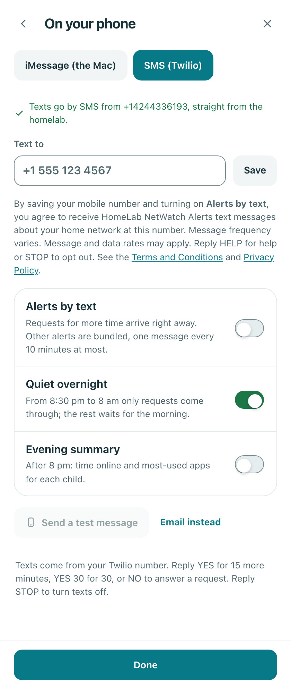
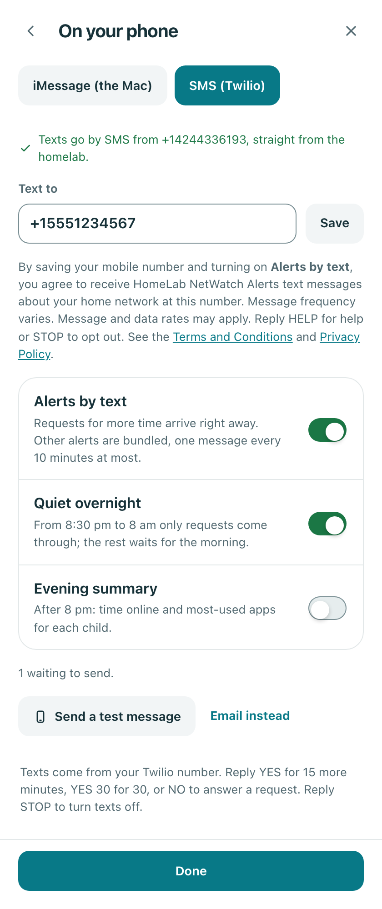

HomeLab NetWatch Alerts – How Opt-In Works
Effective November 14, 2026 · Program operated by HomeLab (sole proprietor)
Why this page exists
The opt-in form is inside the NetWatch dashboard. The dashboard requires sign-in and is reachable only on the home network it monitors, so the form cannot be opened from the internet. This page shows that form before and after opt-in, with the consent wording on it.
Who opts in
The NetWatch account owner, by entering their own mobile number in the dashboard. Opt-in happens only in that form. There is no public sign-up form, and phone numbers are never bought, imported or collected any other way. Opting in is not required to use any other part of NetWatch.
How the account owner opts in
- The account owner signs in to the NetWatch dashboard and opens Family > Alerts > On your phone.
- They choose SMS (Twilio), type their mobile number into the Text to field and press Save. NetWatch sends one confirmation text to that number.
- They read the consent wording shown between the number field and the Alerts by text switch, and turn the switch on. The switch is off by default.
The opt-in form, before and after


Consent wording shown on the form
By saving your mobile number and turning on Alerts by text, you agree to receive HomeLab NetWatch Alerts text messages about your home network at this number. Message frequency varies. Message and data rates may apply. Reply HELP for help or STOP to opt out. See the Terms and Conditions and Privacy Policy.
Confirmation text sent after opting in
HomeLab NetWatch Alerts: you are opted in to alerts about your home network at this number. Msg frequency varies. Msg & data rates may apply. Reply HELP for help, STOP to opt out.
What messages follow
- A managed profile asks for more internet time. The account owner can reply YES (15 more minutes), YES followed by a number of minutes, or NO, and gets one text confirming the answer.
- A managed profile reaches its daily time limit.
- A website is blocked by a rule or filter, a watched website is visited, or an app is used for the first time.
- An optional evening summary of time online for each managed profile.
Message frequency varies with activity on the home network. Requests for more time arrive right away; other alerts are bundled into at most one text every 10 minutes.
Opting out and help
Reply STOP to any message, or turn the same switch off in the dashboard. Reply HELP for help, or text HELP to +1 (424) 433-6193. See also Help and support.
Sharing
We do not sell or share your SMS opt-in data or personal information with third parties for marketing purposes.